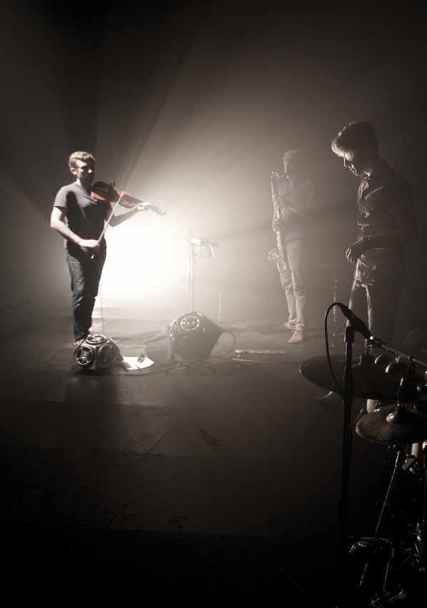

This is How we Fly

TiHwF brings together four performers, each rooted in different cultures and musical vocabularies - a sublime Irish fiddler who's not afraid to step outside convention, a sophisticated Appalachian step dancer stepping into the rhythmic foreground, a thoughtful Dublin jazzman stretching beyond the constraints of the genre, and a lyrical Swedish percussionist redefining the melodic and sonic place of drums within the contours of traditional music.
The collective pedigree is eye catching, and includes bands like The Gloaming, The Chieftains, Darol Anger and Gjallarhorn, along with interdisciplinary work in theatre, dance and contemporary music. Caoimhin O Raghallaigh: Fiddle and hardanger fiddle Sean Mac Erlaine: Clarinets and live electronics Nic Gareiss: Percussive dance Petter Berndalen: Drums and percussion
"Traditional music shot through with the adrenaline of contemporary influences: a lethal but irresitble cocktail" The Irish Times
Sunday 4 May
Venue: Droichead Arts Centre, Stockwell Street
Times: 9:00 pm Sun 4 May
Tickets: 15 in advance, 17 on day